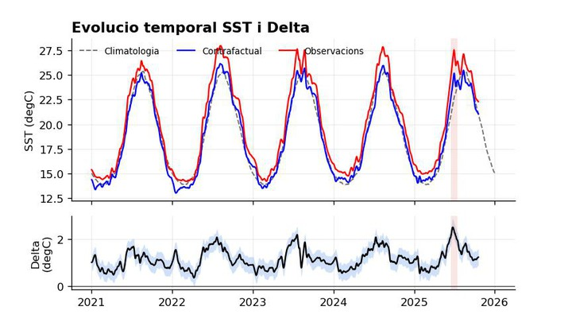
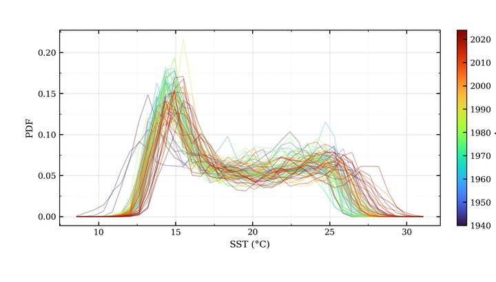
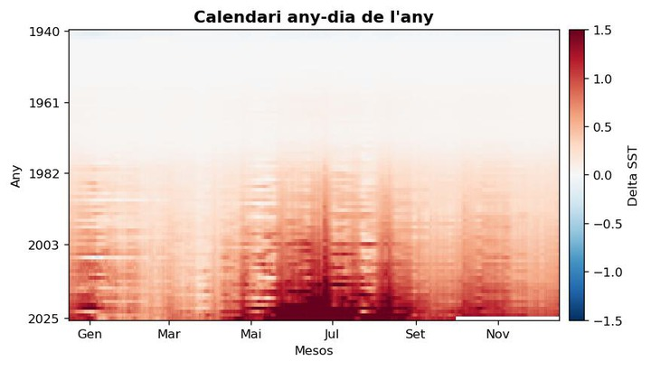
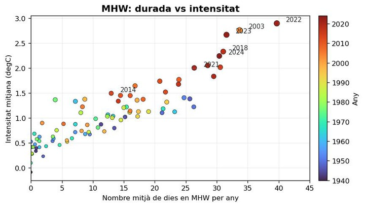
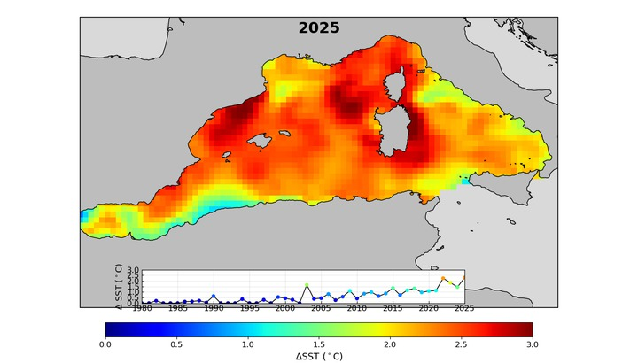
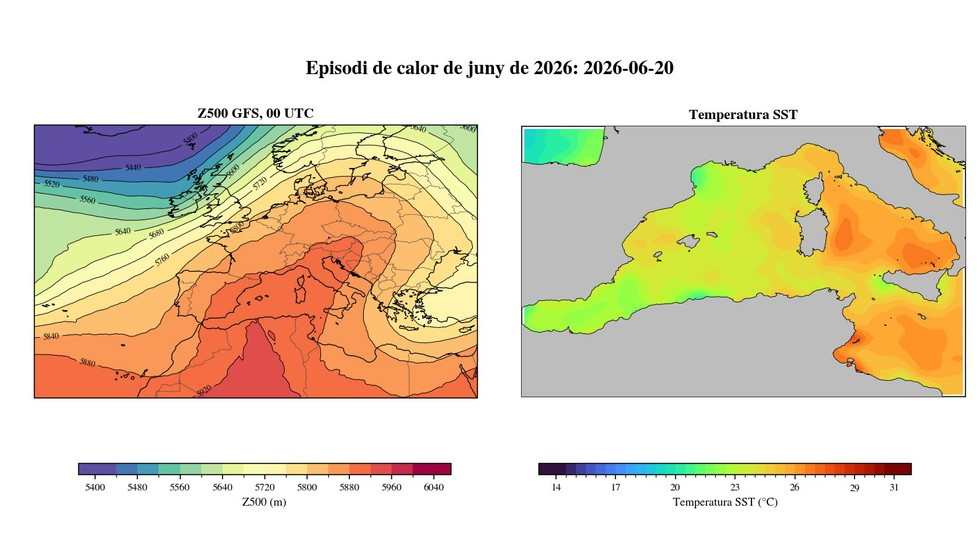

Onades de calor marines: un senyal del canvi climàtic a la Mediterrània occidental
Visualitzacions complementaries per explorar la temperatura superficial del mar, el contrafactual i les onades de calor marines a la Mediterrania occidental.

Figura interactiva SST observada vs contrafactual Serie temporal completa amb comparacio entre observacions, contrafactual i diferencia.
Figura interactiva Histograma anual i estival de SST Distribucio acumulativa anual o d'estiu extens i probabilitat de superar el llindar de 28 degC.
Figura interactiva Calendari SST regional Mapa any-dia de l'any per comparar SST observada, contrafactual i Delta obs-cf.
Figura animada MHW: durada vs intensitat Els punts apareixen any a any; el color indica l'any i la mida creix amb la intensitat.
Figura controlable Mapes animats SST i MHW Selector amb controls de reproduccio per l'increment estival de SST, els dies en MHW i la intensitat MHW.
Figura controlable Episodis Z500 i anomalia SST Seqüencies controlables de Z500 i anomalia SST respecte 1980-2002 durant els episodis de 2003 i 2026.